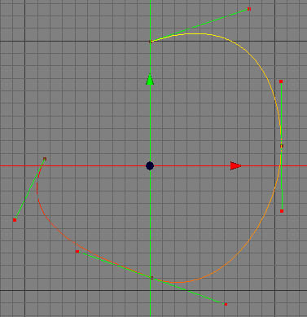

スプラインの作成 ツール
オリジナルな形状のスプラインは、旋盤やパス押し出し、押し出しといったオブジェクトと組み合わせてよく使われるため、スプラインの作成ツールは大変重要なツールです。スプラインの作成は全く新規のスプラインオブジェクトの作成にも、既存のスプラインの拡張にも使用する事ができます。
編集モード
スプラインの作成は全てのモードで使用可能ですが、ポイントモードでのみコントロールポイントや接線を見る事ができるので、ポイントモードでの使用をおすすめします。このスプラインツールは、ロースプラインオブジェクトでのみ使用可能です。
-


スプラインの作成を使用するには、まずメニューから "ツール スプラインツールスプラインの作成" を選択します。スプラインのコントロールポイントを追加するには、3D ビュー をクリックします。このポイントは、カメラに最も面した座標系の面に追加されます。例えば、カメラが Z 方向を向いている場合、新しいポイントは XY 平面に追加されます。コントロールポイントは、続けて追加していく事ができます。新しいコントロールポイントを追加した後に、マウスをドラッグすると、そのポイントでスプラインの接線を調整する事ができます。
スプラインツールスプラインの作成" を選択します。スプラインのコントロールポイントを追加するには、3D ビュー をクリックします。このポイントは、カメラに最も面した座標系の面に追加されます。例えば、カメラが Z 方向を向いている場合、新しいポイントは XY 平面に追加されます。コントロールポイントは、続けて追加していく事ができます。新しいコントロールポイントを追加した後に、マウスをドラッグすると、そのポイントでスプラインの接線を調整する事ができます。
もし閉じたスプラインを作成したい場合、スプラインの最初の点をクリックするか、ツールプロパティからスプラインを閉じるボタンを使用する事ができます。
ツールプロパティの新規スプラインボタンを使って、１つ以上のスプライン曲線を１つのスプラインオブジェクトに作成する事ができます。
重要
もし、スプラインの作成を使用した時に、オブジェクトブラウザでの選択オブジェクトがスプラインオブジェクトでなかった場合、新しいスプラインオブジェクトが作成されます。スプラインの作成を使用する前に、既存のスプラインオブジェクトを選択していた場合、選択したスプラインオブジェクトに追加編集します。

補助キー
-
- なし
プロパティ
- 新規スプライン: 選択したスプラインオブジェクトに新しいスプラインパスを追加します。
- スプラインを閉じる: アクティブなスプラインを閉じます。次のクリックで、新しいスプライン曲線が追加されます。